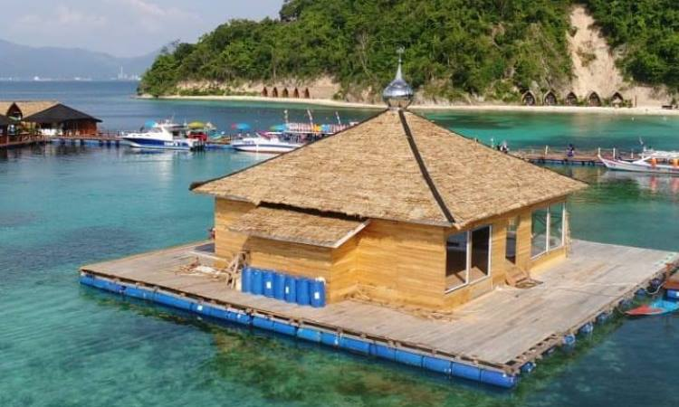

| HOME | Biodiversitas | Watersport | Penginapan | Masjid Apung |
Masjid ApungTidak hanya penginapan saja yang didesain terapung. Di Pulau Tegal Mas, konsep unik juga diterapkan untuk sarana peribadatan umat muslim, yakni Masjid Ar-Yoyol. Masjid yang bisa menampung hingga lebih dari 100 orang jamaah ini, posisinya menjorok sekitar 50 meter ke arah laut. Fasilitas ini menjadi daya tarik tersendiri, bagi jamaah maupun wisatawan yang ingin menikmati wisata religi | ||||
|---|---|---|---|---|
|  | ||||